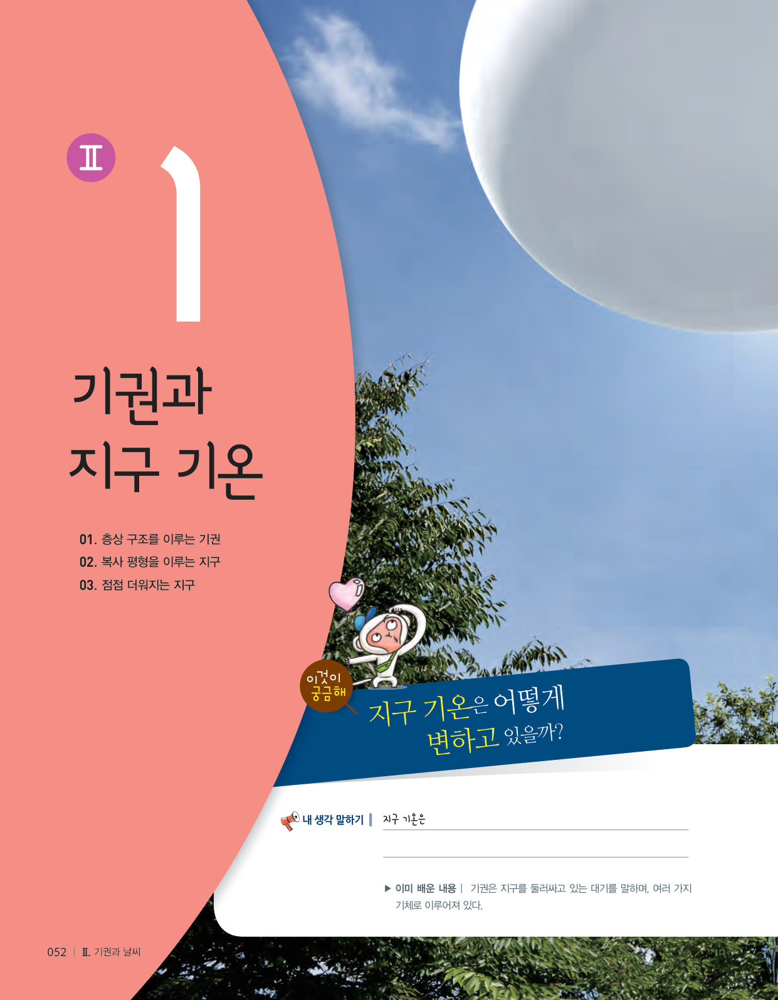
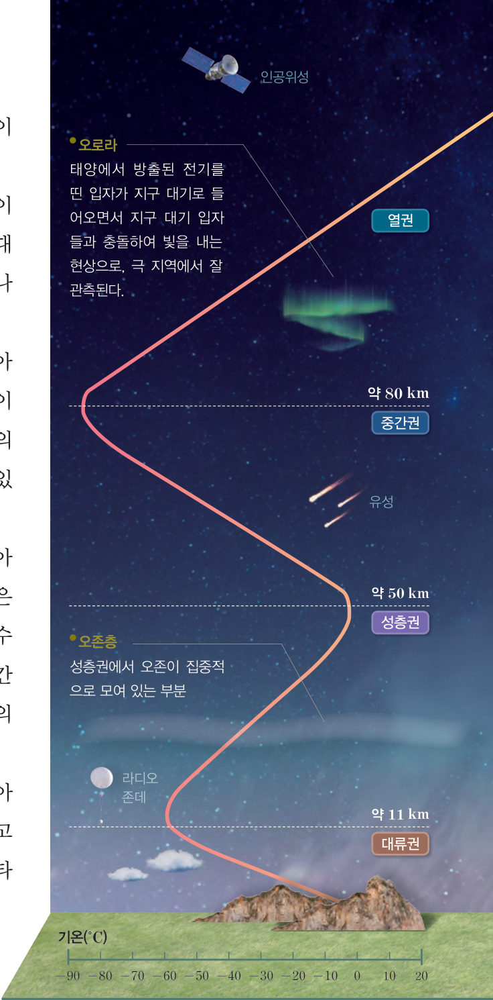

높은 산보다 더 높은 곳의 기온은 어떻게 변할까? 표의 값을 직접 그래프에 찍어 기권의 기온 분포를 그리고, 라디오존데를 타고 110 km까지 올라가며 대류권·성층권·중간권·열권을 탐험해 보자.

하늘 높이 올라가는 풍선을 살펴봐. 풍선에 매달린 장치를 볼 수 있을 거야. 라디오존데라고 하는 이 장치는 높은 곳에 있는 공기의 기온과 습도 등을 측정하고 그 자료를 기상대로 전송해. 또, 인공위성을 이용하면 지구 전체의 기온도 알 수 있대. 지구 기온은 어떻게 변하고 있을까?
▶ 이미 배운 내용 | 기권은 지구를 둘러싸고 있는 대기를 말하며, 여러 가지 기체로 이루어져 있다.
🔑 첫 번째 열쇠 기권에서 높이에 따라 기온이 어떻게 달라지는지 확인한다. · 두 번째 열쇠 지구 평균 기온이 일정하게 유지되는 까닭을 알아본다. · 세 번째 열쇠 지구 평균 기온의 최근 변화를 알아본다.
이 단원과 관련해 이미 알고 있는 것에 표시해 보자.
여름에도 히말라야산맥의 높은 산봉우리는 눈으로 덮여 있다. 이는 낮은 평지와 비교할 때 높은 산 위는 기온이 낮기 때문이다. 이와 같이 기권의 기온은 높이에 따라 달라진다. 표의 값을 이용하여 기권의 기온 분포를 그래프로 그려 보자. (지구에서 대기는 지표에서 높이 약 1000 km까지 분포한다.)
| 높이(km) | 0 | 10 | 20 | 30 | 40 | 50 | 60 | 70 | 80 | 90 | 100 | 110 |
|---|---|---|---|---|---|---|---|---|---|---|---|---|
| 기온(℃) | 15.0 | -50.0 | -56.5 | -46.5 | -22.0 | -2.5 | -28.0 | -56.0 | -76.5 | -86.0 | -73.5 | -9.0 |

기권은 높이에 따른 기온 변화를 기준으로 대류권, 성층권, 중간권, 열권으로 구분한다.
지표부터 높이 약 11 km까지는 높이 올라갈수록 기온이 낮아지는데, 이 층을 대류권이라고 한다. 대류권에는 공기 대부분이 모여 있으며, 대류가 활발하고 수증기가 있어 눈이나 비 등 기상 현상이 나타난다.
높이 약 11 km~50 km는 높이 올라갈수록 기온이 높아지는데, 이 층을 성층권이라고 한다. 성층권에는 오존층이 있으며, 오존은 태양에서 오는 자외선을 흡수하여 성층권의 기온을 높인다. 성층권에서는 기온이 높은 공기가 위쪽에 있으므로 대류가 일어나지 않는다.
높이 약 50 km~80 km는 높이 올라갈수록 기온이 낮아지는데, 이 층을 중간권이라고 한다. 높이 약 80 km 부근은 기권에서 기온이 가장 낮다. 중간권은 대류가 일어나지만 수증기가 거의 없으므로 기상 현상은 일어나지 않는다. 중간권에서는 외권에서 지구로 들어오는 행성간 물질이 대기와의 마찰로 타면서 유성으로 관측되기도 한다.
높이 약 80 km 이상에서는 높이 올라갈수록 기온이 높아지는데, 이 층을 열권이라고 한다. 열권은 공기가 희박하고 낮과 밤의 기온 차가 매우 크다. 열권에서는 오로라가 나타나기도 한다.
| ⑴ 공기 대부분이 모여 있고 기상 현상이 나타난다. | |
| ⑵ 오존층이 있어 자외선을 흡수한다. | |
| ⑶ 기온이 높은 공기가 위쪽에 있어 대류가 일어나지 않는다. | |
| ⑷ 대류는 일어나지만 수증기가 거의 없어 기상 현상이 없다. | |
| ⑸ 유성이 관측된다. | |
| ⑹ 공기가 희박하고 낮과 밤의 기온 차가 매우 크며, 오로라가 나타난다. |
| A | |
| B | |
| C | |
| D |
| ⑴ 대류권 | |
| ⑵ 성층권 | |
| ⑶ 중간권 | |
| ⑷ 열권 |
| ⑴ 공기는 대부분 열권에 있다. | |
| ⑵ 중간권에는 수증기가 거의 없다. | |
| ⑶ 대류가 활발한 층은 대류권과 성층권이다. |
| 평가 기준 | 스스로 평가 |
|---|---|
| 기권이 층상 구조를 이루고 있음을 설명할 수 있다. | |
| 자료를 그래프로 변환하여 기권의 기온 분포를 해석할 수 있다. |